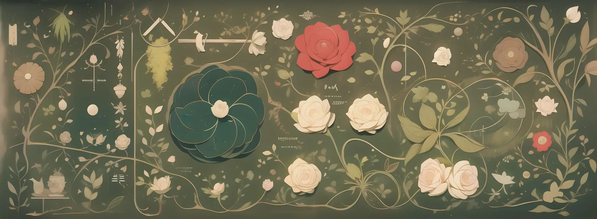

音・言葉・運用を同じリズムで。
AIを「答えを出す機械」ではなく、自分の考えを引き出す鏡として使う実験です。

→ 追加は Hub へ
AIを使って思考を深めるトレーニング。金沢・対面・少人数。
詳細を見る →「構造の呼吸」制作記録（JP/EN）。歌詞・音・意図の最初のまとまり。
開く →記憶連続性／説明責任に関する提案。Phase2 英語報告書も収録。
開く →創造的鏡構造：ビジュアル対話の試作群（記録＋解析）。
開く →固定ヘッダー・差分テンプレ・Suno可変プロンプト集。
開く（要パス） →AIとの対話から生まれた実験の全記録。
開く →→ 制作記録・過程ページの一覧は Archive へ